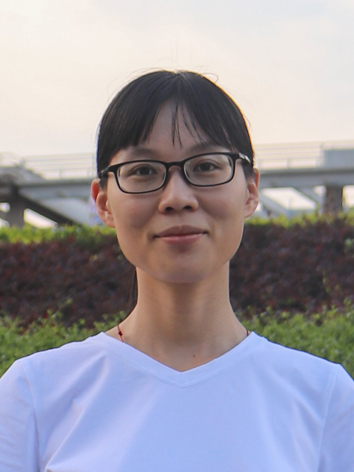

Chinese Version
|
Wei Chen 陈薇
Lecturer
Lab of DMIR, Data Mining and Information Retrieval Laboratory
College of Computer Science and Technology
Guangdong University of Technology
Guangzhou, China. 510006.
Email: chenweidelight@gmail.com
|

|
Biography
I am a Lecturer in the School of Computer and the director of the Data Mining and Information Retrieval Laboratory, Guangdong University of Technology.
I received my B.S. degree and Ph.D. degree in Computing Science from the School of Computer, Guangdong University of Technology in 2015 and 2020 (Supervised by Ruichu Cai and Zhifeng Hao), respectively.
I was a visiting student at Carnegie Mellon University in 2018-2019 (Supervised by Kun Zhang and Clark Glymour).
My research interests include causal discovery and its applications.
Education
Source
Github:
https://github.com/DMIRLAB-Group
Causal Learn:
causal-learn: Causal Discovery in Python
Experience
-
Guangdong University of Technology
-
Lecturer
July 2022 - Present
-
Guangdong University of Technology
-
Postdoc
July 2020 - July 2022
Research Interests
-
Causal discovery and causality-related learning
-
Machine Learning and so on
News
-
2024/4/17, one paper 'Individual Causal Structure Learning from Population Data' has been accepted by IJCAI 2024!
-
2023/12/10, one paper 'Identification of Causal Structure with Latent Variables based on Higher Order Cumulants' has been accepted by AAAI 2024!
-
2023/4/25, one paper 'Causal Discovery with Latent Confounders Based on Higher-Order Cumulants' has been accepted by ICML 2023!
Selected Projects
-
National Natural Science Foundation of Guangdong, Research on Hidden Causal Structure Learning Method from Cross-domain Data, January 2025-December 2027
-
Guangzhou Basic and Applied Basic Research Foundation, Research on Causal Learning Method from Population Data, January 2024-December 2026
-
National Natural Science Foundation of China, Research on Causal Discovery from Multi-source and Partially Observed Data, January 2022-December 2025
-
China Postdoctoral Science Foundation, June 2021-June 2022
Selected Publications
-
Wei Chen, Xiaokai Huang, Zijian Li, Ruichu Cai*, Zhiyi Huang, Zhifeng Hao. Individual Causal Structure Learning from Population Data. IJCAI 2024
-
Wei Chen, Zhiyi Huang, Ruichu Cai*, Zhifeng Hao, Kun Zhang. Identification of Causal Structure with Latent Variables based on Higher Order Cumulants. AAAI 2024
-
Ruichu Cai, Zhiyi Huang, Wei Chen*, Zhifeng Hao, Kun Zhang. Causal Discovery with Latent Confounders Based on Higher-Order Cumulants. ICML 2023
-
Wei Chen, Ruichu Cai*, Kun Zhang, Zhifeng Hao. Causal Discovery in Linear Non-Gaussian Acyclic Model with Multiple Latent Confounders. IEEE Transactions on Neural Networks and Learning Systems, 2021
-
Ruichu Cai, Yunjin Wu, Xiaokai Huang, Wei Chen*, Tom Z. J. Fu, Zhifeng Hao. Granger Causal Representation Learning for Groups of Time Series. Science China Information Sciences, 2024
-
Ruichu Cai, Liting Huang, Wei Chen*, Jie Qiao, Zhifeng Hao. Learning Dynamic Causal Mechanisms from Non-stationary Data. Applied Intelligence, 2023
-
Wei Chen, Jibin Chen, Ruichu Cai*, Yuequn Liu, Zhifeng Hao. Learning Granger Causality for Non-stationary Hawkes Processes. Neurocomputing, 2022
Services
-
PC: ICML 2022-2024, UAI 2022-2024, NeurIPS 2022-2024, AAAI 2025, ICLR 2023-2024, AISTATS 2024, CDML 2020
-
Reviewer: IEEE Transactions on Neural Networks and Learning Systems (TNNLS), Neural Network, Neurocomputing, Transactions on Machine Learning Research (TMLR), and so on.